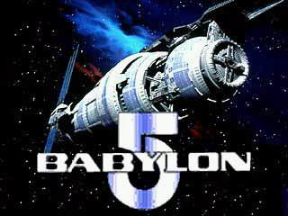

Babylon One will be the first city in space, and the first self sufficient space colony in human history. It will open the interplanetary space resources to mankind, and will also be the cradle of the most advanced civilization in the Solar System. But first we have to make it happen!
Babylon One is an experiment that will take place in virtual space. Conceived as multiplayer online game, the goal is to bring together the people who will be the first citizens, engineers, scientitst and enterpreneurs of this space metropolis to exchange ideas and run a simulation that could be a blue-print for an actual space station.
The name of the city was mainly inspired by the mid 90s Scifi TV series Babylon 5 and, in a lesser extent, by the historical significance of ancient Babylon, which was the cradle of agricultural civilization.
To make the development faster and easier, parallel small projects are being developed, that may be integrated into Babylon One.
You can follow our blog to keep up to date with the development.